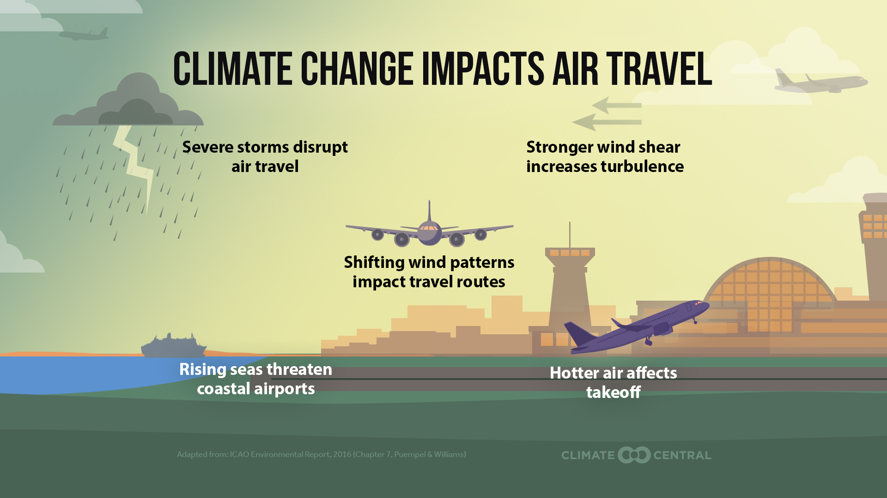
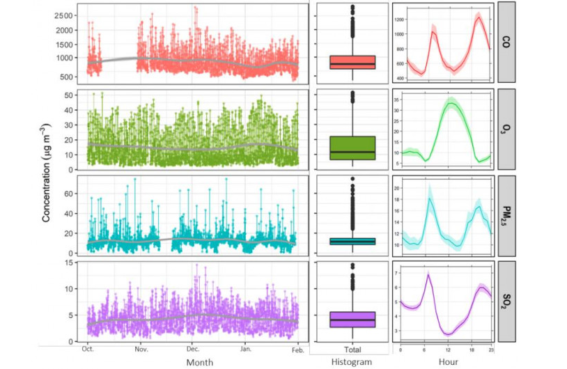
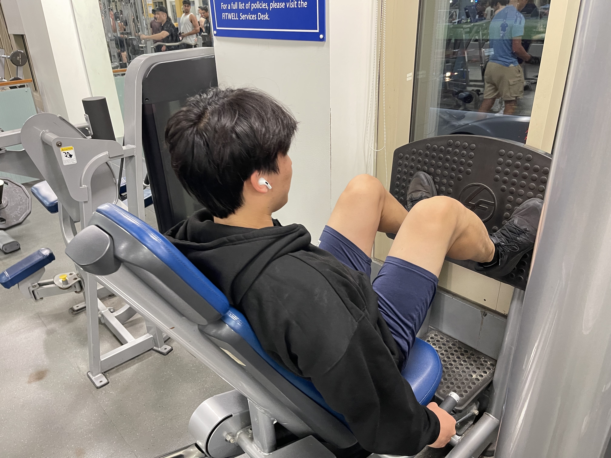
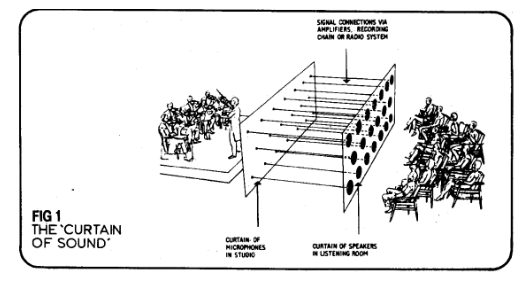
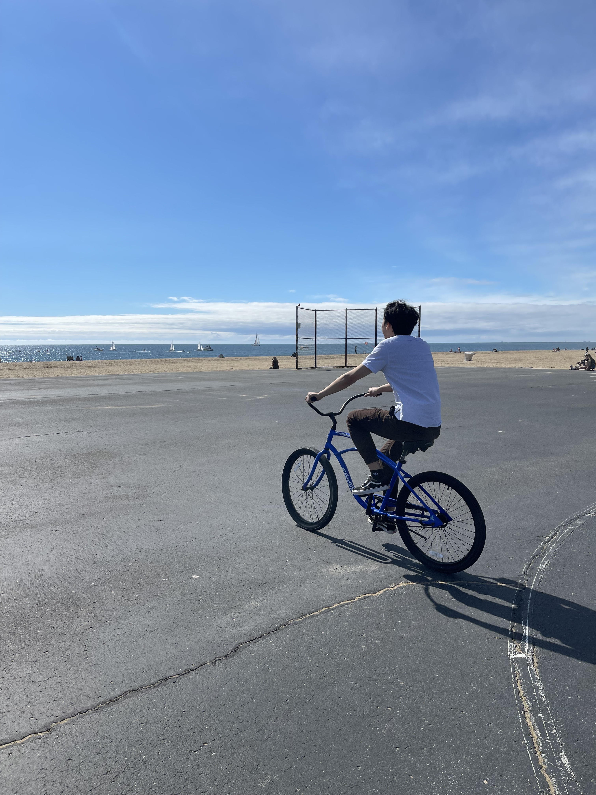

I'm an aspiring Data Scientist eager to harness Machine Learning and Artificial Intelligence as a catalyst for innovation, building intelligent systems that solve pressing modern problems.
With a strong foundation in mathematics, statistics, and computer science, I began my academic journey at the University of California, Los Angeles, where I built a rigorous quantitative base that sparked my interest in data-driven problem solving.
After graduating from Columbia University with my Master's in Data Science, I have refined my expertise in data manipulation, statistical analysis, and predictive modeling. Through rigorous coursework and hands-on projects, I developed proficiency in Python, R, and SQL, along with experience using tools and frameworks such as pandas, TensorFlow, and Tableau for data visualization and machine learning applications. I also bring practical experience working with cloud platforms, large language models, and generative AI systems.
Now based in the SF Bay Area, I am eager to apply these technical skills in dynamic, innovation-driven environments where data and machine learning power real-world impact.
Sep 2025 - Dec 2025 • New York, NY
May 2025 - Nov 2025 • Fremont, CA
May 2023 - Aug 2023 • Stanford, CA
Sep 2025 - Present
Nov 2025 - Dec 2025
Dec 2024

Jan 2024 - Mar 2024
Dec 2023
Apr 2023

Mar 2023
Jun 2020 - Aug 2020



I'm always happy to connect with new people, hear about what they're working on, and learn about new opportunities — especially in data science and AI.
Whether you have an opportunity, a question, or just want to connect, send me a note and I'll reply promptly.
SEND A MESSAGE